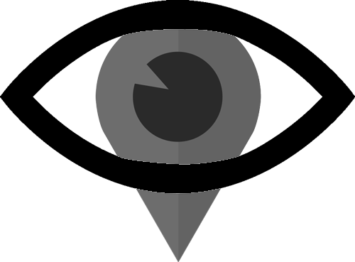

Exposición para operadores de cabina y radio operadores
Abrí la cámaradel celular
Apuntá al códigosin sacar foto
Tocá el enlaceque aparece en pantalla
Al final de la guía podés descargar el material en PDF para tenerlo siempre a mano.